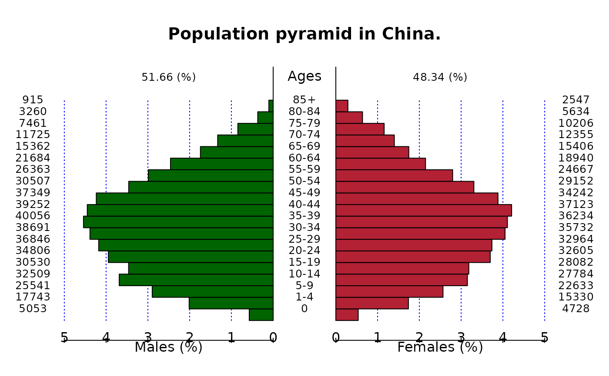

Plot population pyramid
A data.frame including left pyramid numbers in the 1st column and and right pyramid numbers in the 2nd column, where the numbers of males in each age-class are usually given to left numbers and those of females are to right numbers. If the data.frame includes 3rd column, it is used as age-class labels, otherwise the row.names(data) is used as age-class labels.
Logical value to draw the population numbers. Default is TRUE.
Logical value to draw the pyramid using proportion. Default is TRUE.
A vector of axis for left pyramid. If missing, automatically given using pretty().
A vector of axis for right pyramid. If missing, left_axis is used.
A format code of formatC for plotting axis. If missing, "g" is used.
A big.mark of formatC for plotting axis. If missing, none.
A big.interval number of formatC for plotting axis. Default is 3.
The width of center gap (as ratio to each panel) to draw age-class. Default is 0.3.
The interval to write the labels of age classes. Default is 1.
The font size factor to write the labels of age classes. Default is 1.
The label of the left, center, and right pyramid. Default is c("Males", "Ages", "Females").
Logical value to draw the vertical dotted lines. Default is TRUE.
The vertical adjustment factor for the labels of age classes. Default is -0.03.
The color of the left and right pyramid. Default is c("lightblue", "pink").
The density of hatching lines (/inch) for left and right pyramid. Default is c(-1, -1), when the pyramid will be filled.
The main title of the pyramid.
Other options.
A population pyramid plot.
left <- c(
5053, 17743, 25541, 32509, 30530, 34806, 36846, 38691, 40056,
39252, 37349, 30507, 26363, 21684, 15362, 11725, 7461, 3260, 915
)
right <- c(
4728, 15330, 22633, 27784, 28082, 32605, 32964, 35732, 36234,
37123, 34242, 29152, 24667, 18940, 15406, 12355, 10206, 5634,
2547
)
agegrp <- c(
"0", "1-4", "5-9", "10-14", "15-19", "20-24", "25-29", "30-34",
"35-39", "40-44", "45-49", "50-54", "55-59", "60-64", "65-69",
"70-74", "75-79", "80-84", "85+"
)
pop <- data.frame(left = left, right = right, row.names = agegrp)
pyramid(pop, main = "Population pyramid in China.", csize = 0.8)
